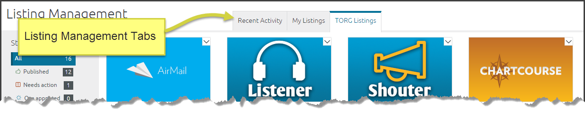
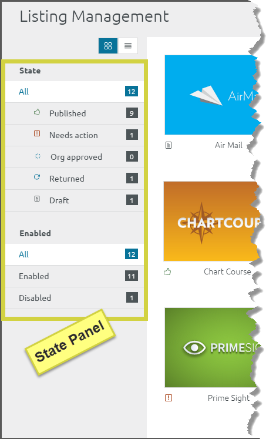

Org stewards can see every listing in their organization from their Listing Management page. To access this page, click the drop-down Main Menu on the right side of the Global Toolbar and select Listing Management:
As an organizational steward, the Listing Management page displays information about listings you own and listings you oversee. The Listing Management page displays different information for different users. The following sections explain each field as it relates to org stewards. For the user view see User View: Listing Management Page; or the Center steward section for Center stewards.

As an org steward, you see multiple tabs on the Listing Management screen:
|  |
The left-side State panel provides slightly different information than a user’s or Center steward's left-side panel: State
Enabled All stewards see the Enabled section which allows them to filter by Enabled and Disabled listings (For information about Enabled and Disabled listings see Org Steward: Enable/Disable a Listing.
|